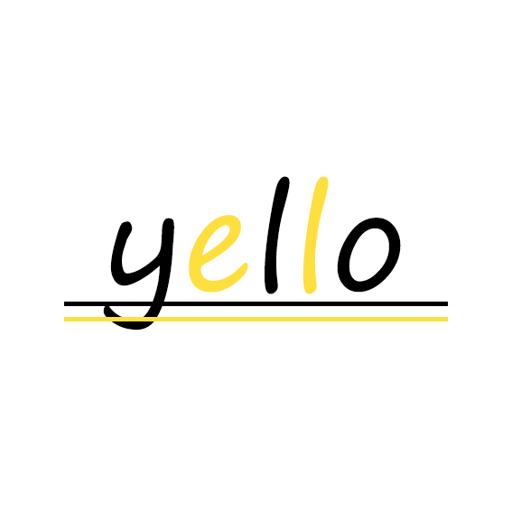

- #이승기
- #금지된 사랑
- #집사부일체
ㅣ[풀영상] 이승기(Lee Seung-Gi)
＜금지된 사랑♬(Forbidden love)＞ 무대 Ver.
집사부일체(Master in the House)ㅣSBS ENTER.
ㅣ[Full Version] Lee Seung-Gi
Forbidden love♬ stage Ver. Master in the HouseㅣSBS ENTER.
ㅣ[풀영상] 이승기(Lee Seung-Gi)
＜금지된 사랑♬(Forbidden love)＞ 무대 Ver.
집사부일체(Master in the House)ㅣSBS ENTER.
ㅣ[Full Version] Lee Seung-Gi
Forbidden love♬ stage Ver.
조회수 1,540,324 / 2021.09.20

옐로/Yello
구독자 243만명
-
.jpg) [옐로] 메이플스토리 사냥시 필요한 필수 링크스킬!! 옐로/Yello
[옐로] 메이플스토리 사냥시 필요한 필수 링크스킬!! 옐로/Yello조호수 75만회 / 3개월 전 -
.jpg) [옐로] 메이플스토리 보스돌이시 필요한 필수 링크스킬!! 옐로/Yello
[옐로] 메이플스토리 보스돌이시 필요한 필수 링크스킬!! 옐로/Yello조호수 94만회 / 2개월 전 -
.jpg) [옐로] 메이플스토리 아크 육성시 필요한 필수 코어 강화 옐로/Yello
[옐로] 메이플스토리 아크 육성시 필요한 필수 코어 강화 옐로/Yello조호수 372만회 / 1개월 전 -
.jpg) [옐로] 메이플스토리 은월 육성시 필요한 필수 코어 강화 옐로/Yello
[옐로] 메이플스토리 은월 육성시 필요한 필수 코어 강화 옐로/Yello조호수 12만회 / 7개월 전
-
[옐로] 메이플스토리 사냥시 필요한 필수 링크스킬!! 옐로/Yello
조호수 75만회 / 3개월 전 -
[옐로] 메이플스토리 보스돌이시 필요한 필수 링크스킬!! 옐로/Yello
조호수 94만회 / 2개월 전 -
[옐로] 메이플스토리 아크 육성시 필요한 필수 코어 강화 옐로/Yello
조호수 372만회 / 1개월 전 -
[옐로] 메이플스토리 은월 육성시 필요한 필수 코어 강화 옐로/Yello
조호수 12만회 / 7개월 전